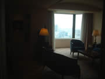
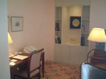

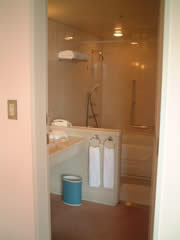
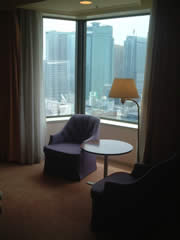
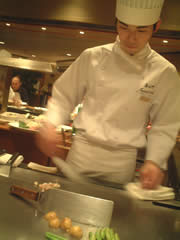
まーなにはともあれ「嘉門」で鉄板焼。シェフとマンツーマン。素晴らしい手際の良さ。そしてワインリストの出来のよさに感動。なんてったってビンテージリスト付。車えびは胴体を普通に焼き、頭を衣付で焼いてミソを閉じ込め、足をせんべい状にと三種類の味と食感に仕立てる秀逸な一品。
シャンパーニュ（グラス）、白ワイン（グラス）、赤ワイン（１本）
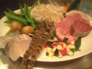
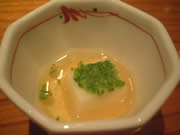
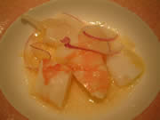
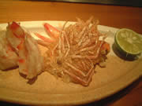
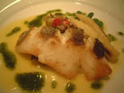
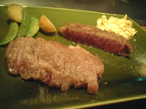
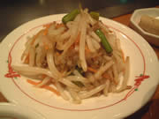
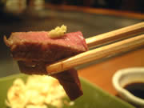
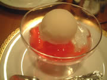
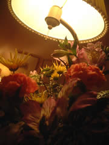
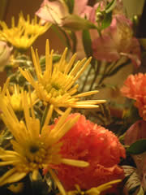
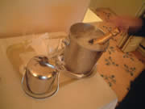
花のルームサービスも来ました。
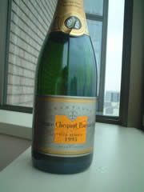
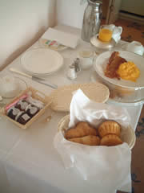
朝食はルームサービス。
瓶入りジャムが４つ。パン２種、卵料理、付け合せのベーコン、ジュース、紅茶。
このスイート一泊、嘉門での夕食しめて二人でいくらでしょう？
実はオークションで53000円。
ひとり26000円と考えるとなかなかリーズナブルだったのかな？ちなみに嘉門の同コースは一人15000円（飲み物別）。と考えると一人あたりの宿泊費は１万ちょっと。スイートなのに（笑）うむ〜文句は言えませんな。